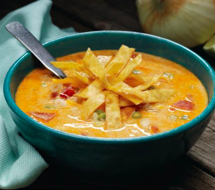

Enchilada Soup

Servings: 6 bowls
Directions
- In dutch oven or large saucepan combine broth, corn, enchilada sauce & chiles
- Boil with medium-high heat
- Add remaining ingredients except cheese
- Reduce heat to low, simmer 8 min stirring occasionally
- Serve soup in a festive bowl and garnish with cheese
Ingredients
- 42 ounces chicken broth
- 29.5 ounces canded cream style sweet corn
- 20 ounces red enchilada sauce
- 4.5 ounces chopped green chiles
- 10 ounces shredded rotisory chicken
- 1 & 1/2 tsp cumin
- 1/2 tsp salt
- 1/2 tsp onion powder
- 1/2 tsp dried oregano
- 1 med onion
- Shredded colby-jack cheese